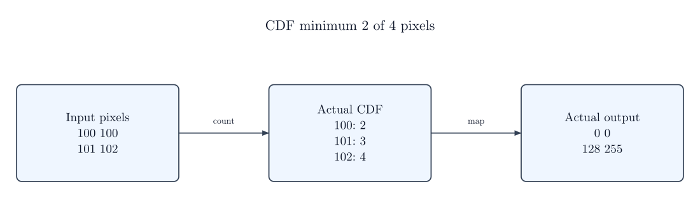
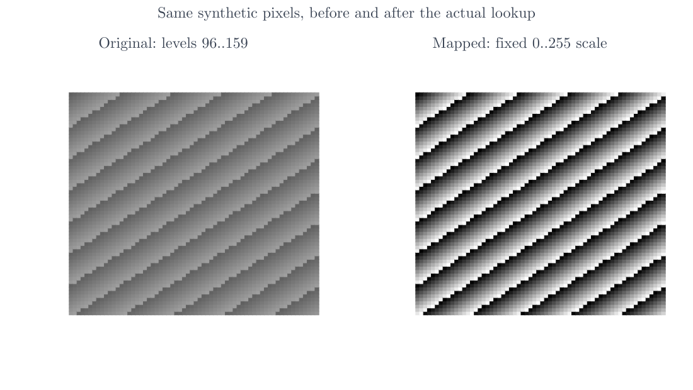
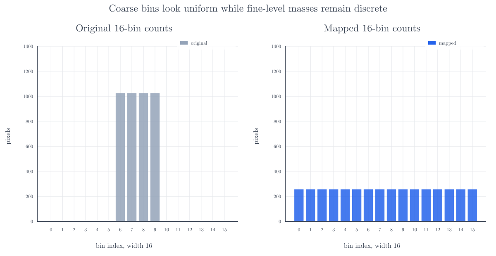
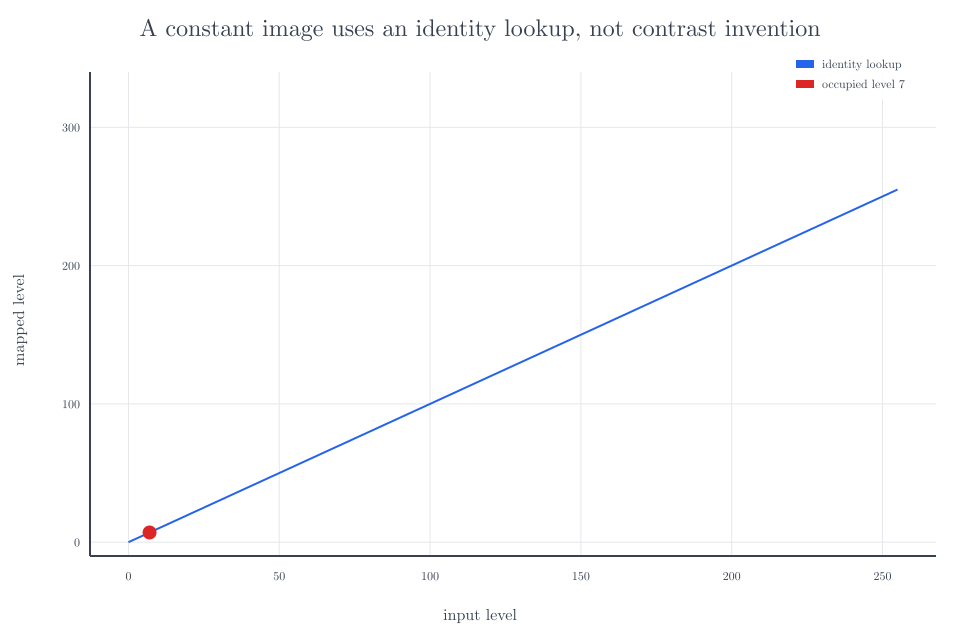

Histogram equalization: a discrete CDF map, not a uniformity guarantee
Abstract
Remap a grayscale image whose intensities occupy a narrow range, while preserving the order of intensity levels. A global cumulative histogram supplies a monotone lookup table, but discrete pixel masses cannot be split into an arbitrary uniform distribution. This report follows a four-pixel calculation, retains the original 64×64 low-contrast pattern, and displays both actual image values and coarse histograms on shared scales. A rare-level example shows quantization merging distinct inputs, while constant/empty and clamping controls define the boundaries. The implementation is a global grayscale transform, not a local adaptive method or a guarantee of improved visual information.
Four pixels: count, accumulate, map
Use a 2×2 image with rows (100,100) and (101,102). The occupied counts are 2,1,1 and inclusive cumulative counts are 2,3,4. With N=4 and cdf_min=2, the normalized values at these levels are 0,1/2,1, mapped to 0,128,255 by the library's half-up conversion. The output rows are (0,0) and (128,255).
The following table and concept diagram use the actual histogram, CDF, mapping and mapped output from one shared execution. Unoccupied levels are included in the lookup table, but they contribute no output pixels.
#include <dm/dm.hpp>
int main() {
std::filesystem::create_directories("build");
const auto t =
dm::algorithms::histogram_equalize_trace({{100, 100}, {101, 102}});
std::print("| input level | input count | inclusive CDF | actual mapping | output count at mapped level " "|\n| ---: | ---: | ---: | ---: | ---: |\n");
for (int v : {99, 100, 101, 102, 255})
std::print("| {} | {} | {} | {} | {} |\n", v, t.histogram[v], t.cdf[v],
t.mapping[v], t.output_histogram[t.mapping[v]]);
std::print("\nPixels {}; cdf_min {}; actual output rows [{},{}] / [{},{}]; identity {}.\n",
t.pixels, t.cdf_min, t.image[0][0], t.image[0][1], t.image[1][0],
t.image[1][1], t.identity_mapping);
dm::graphics::Diagram d(65, 1100);
dm::graphics::DiagramNodeStyle style;
style.width = 4.5;
style.height = 2.7;
style.font_size = 22;
d.node("input", {0, 0}, "Input pixels\n100 100\n101 102", style).node(
"cdf", {7, 0},
std::format("Actual CDF\n100: {}\n101: {}\n102: {}", t.cdf[100],
t.cdf[101], t.cdf[102]), style).node(
"output", {14, 0},
std::format("Actual output\n{} {}\n{} {}", t.image[0][0], t.image[0][1],
t.image[1][0], t.image[1][1]), style).edge("input", "cdf",
"count").edge(
"cdf", "output", "map").text({7, 3},
std::format("CDF minimum {} of {} pixels",
t.cdf_min, t.pixels), 25).save_svg("build/equalization_tiny.svg");
if (t.image != dm::algorithms::EqualizationImage{{0, 0}, {128, 255}})
throw std::runtime_error("tiny map");
}| input level | input count | inclusive CDF | actual mapping | output count at mapped level |
|---|---|---|---|---|
| 99 | 0 | 0 | 0 | 2 |
| 100 | 2 | 2 | 0 | 2 |
| 101 | 1 | 3 | 128 | 1 |
| 102 | 1 | 4 | 255 | 1 |
| 255 | 0 | 4 | 255 | 1 |
Pixels 4; cdf_min 2; actual output rows [0,0] / [128,255]; identity false.

Derive the discrete CDF-min mapping
Clamp each integer input to c(v)=min(255,max(0,v)), then count h(k) and form C(k)=Σ(j≤k)h(j). Let C_min be the first nonzero cumulative count. For more than one occupied level, the mathematical transformation is
The code retains the legacy order of double conversion, subtraction, division, multiplication, clipping and int(value+0.5). Counts are exact size_t values, but converting very large counts above 2^53 can lose distinctions. This is not a certified rational implementation. For the bounded examples here, the explicit counts permit independent exact checks.
C is nondecreasing, so clipping, positive scaling and half-up conversion give a nondecreasing lookup. In exact arithmetic nonconstant occupied endpoints map to 0 and 255. If there is only one occupied clamped level, N=C_min and the formula has zero denominator: this implementation instead uses the identity lookup and preserves that level. Empty shapes also use an identity lookup with zero histograms.
The output histogram is the pushforward of the original counts:
A deterministic map cannot split equal-intensity pixels into different outputs. Thus the number of occupied output levels cannot exceed the input count of occupied levels. Rounding can merge levels; there is no general exact-uniformity guarantee. The operation also ignores geometry: permuting pixel locations leaves the histogram and lookup unchanged, and simply permutes the mapped pixels.
Preserve the original 64×64 pattern, using one grayscale scale
The original fixture has value 96+((7i+5j)mod64). For each row, multiplication by 5 permutes residues modulo 64, so all 64 input levels 96 through 159 occur 64 times in the full image. Its exact lookup on occupied level 96+k is round(255k/63). Equalization reaches both output endpoints while retaining 64 occupied levels, rather than creating 256 levels.
The native image views below use the same fixed 0..255 grayscale palette. Independently autoscaling each panel would hide the contrast change. Original row 0 remains at the top; plot panel dimensions determine displayed cell shape. These are controlled synthetic pixels, with no claim about photographic detail, perceptual quality or a real noise process.
#include <dm/dm.hpp>
int main() {
std::filesystem::create_directories("build");
const auto input = dm::algorithms::equalization_pattern();
const auto t = dm::algorithms::histogram_equalize_trace(input);
const auto occupied_in =
std::count_if(t.histogram.begin(), t.histogram.end(), [](auto n) {
return n != 0;
});
const auto occupied_out =
std::count_if(t.output_histogram.begin(), t.output_histogram.end(), [](auto n) {
return n != 0;
});
std::print("Original shape {}x{}; pixels {}; occupied input levels {}; occupied output levels {}; " "cdf_min {}.\n",
t.rows, t.columns, t.pixels, occupied_in, occupied_out, t.cdf_min);
std::print("Actual occupied endpoint maps: 96 -> {}; 159 -> {}. Histogram pixel visits {}; output pixel " "visits {}; CDF bins {}; map bins {}.\n",
t.mapping[96], t.mapping[159], t.work.histogram_pixels,
t.work.output_pixels, t.work.cdf_bins, t.work.mapping_bins);
for (int k = 0; k < 64; ++k)
if (t.histogram[96 + k] != 64)
throw std::runtime_error("original level counts");
auto layout = dm::graphics::RLayout::create(1, 2);
layout.add(dm::algorithms::equalization_image_plot(input,
"Original: levels 96..159")).add(dm::algorithms::equalization_image_plot(t.image, "Mapped: fixed 0..255 scale"));
layout.size(1100, 620).title("Same synthetic pixels, before and after the actual lookup").fit_panels().save_svg("build/equalization_original.svg");
if (occupied_out != 64 || t.mapping[96] != 0 || t.mapping[159] != 255)
throw std::runtime_error("original mapping");
}Original shape 64x64; pixels 4096; occupied input levels 64; occupied output levels 64; cdf_min 64. Actual occupied endpoint maps: 96 -> 0; 159 -> 255. Histogram pixel visits 4096; output pixel visits 4096; CDF bins 256; map bins 256.

Coarse uniformity can hide discrete masses
The original report compared 16 bins of width 16. The following table preserves that comparison: before mapping, only four bins are populated; after mapping, all 16 have count 256. Yet the fine output histogram still has only 64 nonzero bins, each of mass 64. Coarse bin uniformity is therefore a property of that summary and fixture, not a proof of a 256-level uniform distribution.
A second input contains 100 once, 101 once and 102 one thousand times. The first two levels both map to 0, while 102 maps to 255. Three occupied input levels become two occupied output levels. This concrete merge also shows why deterministic equalization cannot create new intensity information.
#include <dm/dm.hpp>
int main() {
std::filesystem::create_directories("build");
const auto original =
dm::algorithms::histogram_equalize_trace(dm::algorithms::equalization_pattern());
const auto before =
dm::algorithms::equalization_hist16(original.histogram), after =
dm::algorithms::equalization_hist16(original.output_histogram);
std::print("| coarse bin | levels | original count | mapped count |\n| ---: | --- | ---: | ---: |\n");
for (int k = 0; k < 16; ++k) {
std::print("| {} | {}..{} | {} | {} |\n", k, 16 * k, 16 * k + 15,
before[k], after[k]);
if (after[k] != 256)
throw std::runtime_error("coarse fixture");
}
dm::algorithms::EqualizationImage rare(1, std::vector<int>(1002, 102));
rare[0][0] = 100;
rare[0][1] = 101;
const auto t = dm::algorithms::histogram_equalize_trace(rare);
std::print("\nRare-level actual maps: 100 -> {}; 101 -> {}; 102 -> {}. Output masses at0/255: {}/{}.\n",
t.mapping[100], t.mapping[101], t.mapping[102],
t.output_histogram[0], t.output_histogram[255]);
std::vector<double> b(before.begin(), before.end()), a(after.begin(),
after.end());
std::vector<std::string> labels;
for (int k = 0; k < 16; ++k)
labels.push_back(std::to_string(k));
auto layout = dm::graphics::RLayout::create(1, 2);
auto left =
dm::graphics::RPlot::barplot(b, labels, "original", {148, 163, 184});
left.title("Original 16-bin counts").x_label("bin index, width 16").y_label(
"pixels").y_limits(0, 1400);
auto right =
dm::graphics::RPlot::barplot(a, labels, "mapped", {37, 99, 235});
right.title("Mapped 16-bin counts").x_label("bin index, width 16").y_label(
"pixels").y_limits(0, 1400);
layout.add(left).add(right).size(1200, 620).title("Coarse bins look uniform while fine-level masses remain discrete").fit_panels().save_svg("build/equalization_discrete.svg");
if (t.mapping[100] != 0 || t.mapping[101] != 0 ||
t.output_histogram[255] != 1000)
throw std::runtime_error("rare level merge");
}| coarse bin | levels | original count | mapped count |
|---|---|---|---|
| 0 | 0..15 | 0 | 256 |
| 1 | 16..31 | 0 | 256 |
| 2 | 32..47 | 0 | 256 |
| 3 | 48..63 | 0 | 256 |
| 4 | 64..79 | 0 | 256 |
| 5 | 80..95 | 0 | 256 |
| 6 | 96..111 | 1024 | 256 |
| 7 | 112..127 | 1024 | 256 |
| 8 | 128..143 | 1024 | 256 |
| 9 | 144..159 | 1024 | 256 |
| 10 | 160..175 | 0 | 256 |
| 11 | 176..191 | 0 | 256 |
| 12 | 192..207 | 0 | 256 |
| 13 | 208..223 | 0 | 256 |
| 14 | 224..239 | 0 | 256 |
| 15 | 240..255 | 0 | 256 |
Rare-level actual maps: 100 -> 0; 101 -> 0; 102 -> 255. Output masses at0/255: 2/1000.

Constants, clamping and rectangular admission
Clamping happens before counting and again before the actual lookup. A negative input is treated as 0 and an input above 255 as 255. Constant input 7 stays 7, rather than being forced to black or stretched into nonexistent variation. Empty images and rectangular zero-width rows preserve their shapes. The old implementation could count all elements of a ragged input but index output using only the first row's width, risking invalid access; ragged shapes now reject before any output allocation.
#include <dm/dm.hpp>
int main() {
std::filesystem::create_directories("build");
const std::vector<dm::algorithms::EqualizationImage> cases{{}, {{}, {}},
{{7, 7}},
{{-1, 256}}};
std::print("| case | rows | columns | pixels | identity lookup | clamped input locations |\n| ---: | " "---: | ---: | ---: | --- | ---: |\n");
for (std::size_t k = 0; k < cases.size(); ++k) {
const auto t = dm::algorithms::histogram_equalize_trace(cases[k]);
std::print("| {} | {} | {} | {} | {} | {} |\n", k + 1, t.rows,
t.columns, t.pixels, t.identity_mapping,
t.work.clamped_pixels);
}
bool ragged = false, rowcap = false, pixelcap = false;
try {
(void) dm::algorithms::histogram_equalize_trace({{}, {1}}, {1, 1});
} catch (const std::invalid_argument &) {
ragged = true;
}
try {
(void) dm::algorithms::histogram_equalize_trace({{100, 100}, {101, 102}},
{1, 4});
} catch (const std::length_error &) {
rowcap = true;
}
try {
(void) dm::algorithms::histogram_equalize_trace({{100, 100}, {101, 102}},
{2, 3});
} catch (const std::length_error &) {
pixelcap = true;
}
const auto exact =
dm::algorithms::histogram_equalize_trace({{100, 100}, {101, 102}},
{2, 4});
std::print("Ragged shape rejected before caps {}; one-short row cap rejects {}; one-short pixel cap " "rejects {}; exact caps retain {} pixels.\n",
ragged, rowcap, pixelcap, exact.pixels);
const auto flat = dm::algorithms::histogram_equalize_trace({{7, 7}});
std::vector<double> x, y;
for (int v = 0; v < 256; ++v) {
x.push_back(v);
y.push_back(flat.mapping[v]);
}
auto plot = dm::graphics::RPlot::create();
plot.line(x, y, "identity lookup", {37, 99, 235}, 2.).points(
{7.}, {double(flat.image[0][0])}, "occupied level 7", {220, 38, 38}, 7.).title("A constant image uses an identity lookup, not contrast invention").x_label("input level").y_label("mapped level").y_limits(-10, 340).save_svg("build/equalization_controls.svg");
if (!ragged || !rowcap || !pixelcap || flat.image[0][0] != 7)
throw std::runtime_error("boundary controls");
}| case | rows | columns | pixels | identity lookup | clamped input locations |
|---|---|---|---|---|---|
| 1 | 0 | 0 | 0 | true | 0 |
| 2 | 2 | 0 | 0 | true | 0 |
| 3 | 1 | 2 | 2 | true | 0 |
| 4 | 1 | 2 | 2 | false | 2 |
Ragged shape rejected before caps true; one-short row cap rejects true; one-short pixel cap rejects true; exact caps retain 4 pixels.

The diagnostic entry point defaults to one million rows and one million pixels,
each zero disabling that policy. Every row width and checked rows×columns
product is validated before caps and output allocation. Legacy
histogram_equalize has no optional caps but performs the same shape/geometry
checks. Inputs are never mutated. Output rows and all fixed 256-entry tables own
their values and copy independently; calls share no mutable state.
Selected actual work is N histogram pixel visits, 256 CDF bins, 256 lookup entries and N output visits; clamped_pixels counts out-of-range input locations only once. Validation, allocation, copies and diagnostic bookkeeping are outside those selected counts. Total work is O(rows+N+256), output storage O(rows+N), and diagnostic storage fixed in the 256-level alphabet. No unbounded per-pixel history is retained or replayed. Image plots have their own complete display-cell cap and use one native polygon per displayed pixel, so they are intended for modest grids rather than huge raster files.
What this establishes
CDF equalization is an ordered global remapping, with a specific quantized and constant-input policy. The original synthetic example spreads its range and gives uniform coarse bins, while exact counts show that its fine distribution remains discrete. Rare levels can merge and constant images cannot gain new variation. These controlled fixtures isolate the mapping's behavior; no photographic-quality, noise-removal or medical-image inference is claimed. Local adaptive methods, color handling and contrast limiting are outside this implementation.
The canonical reference is the [OpenCV official histogram-equalization tutorial](https://docs.opencv.org/4.x/d5/daf/tutorial_py_histogram_equalization.html), which explains cumulative mapping and distinguishes global equalization from CLAHE. This report derives its own count/pushforward properties and retains the library's explicit rounding, input-clamping and constant-image conventions; it does not assert byte-for-byte equivalence with every OpenCV path.
Verification checks complete small discrete fixtures against exact integer/rational maps, compares valid legacy outputs with a frozen implementation, and checks actual histogram/CDF/output counts under sanitizers. An independent oracle checks the original 4096-pixel fixture, rare-level merging and boundary policies. All API examples, complete programs, inspected figures and both exports are verified before the legacy report is retired.